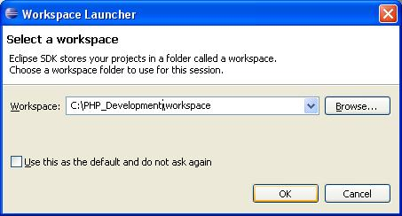
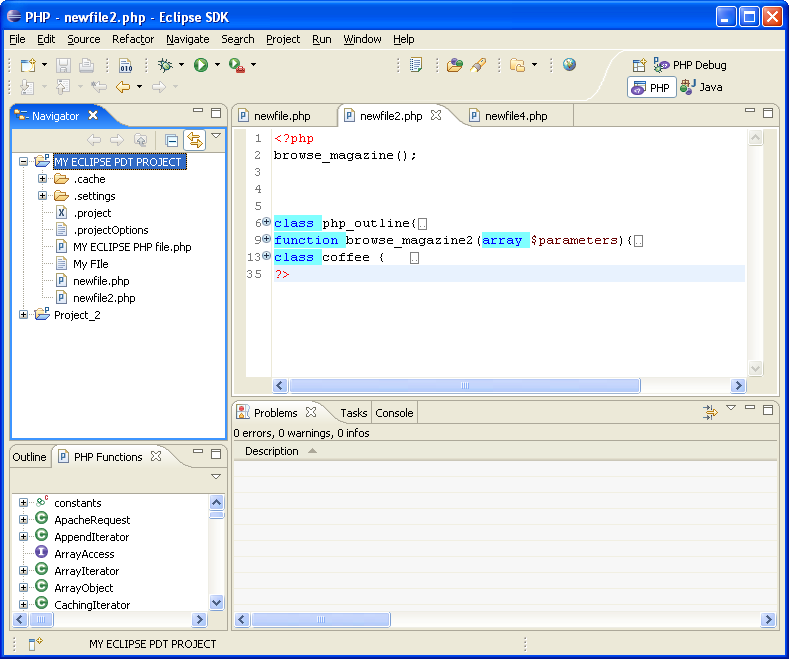
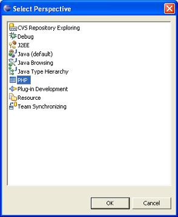

When the PHP Eclipse PDT is first launched a dialog will appear. Use the dialog to select the location of the Eclipse PHP workspace.

Figure 1 Select Workspace
This is the directory where your work will be stored. The workspace itself is the directory where your work will be stored.
Click OK; your Workbench window (with one or more perspectives) will appear. The title bar of the Workbench window shows which perspective is active.
Each perspective contains several panes containing complemettary information in order to provide you with tools and information required to develop your applications efficiently.

Figure 2 Eclipse in PHP Perspective
In general, several panes operate simultaneously in order to provide you with tools and information required to develop your applications efficiently.
Click the select Perspective icon at the top right of the window.
Select Other from the drop down list. The Select Perspective dialog will open.
Select PHP and click OK. The PHP perspective will become active. All PHP functionality is now available.

Figure 2 Select Perspective
Select PHP and click OK. The PHP perspective will become active. All PHP functionality is now active.